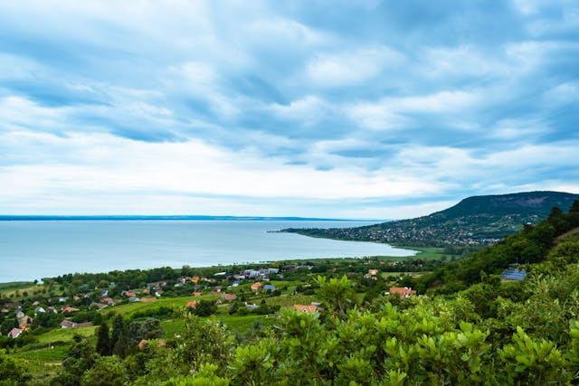
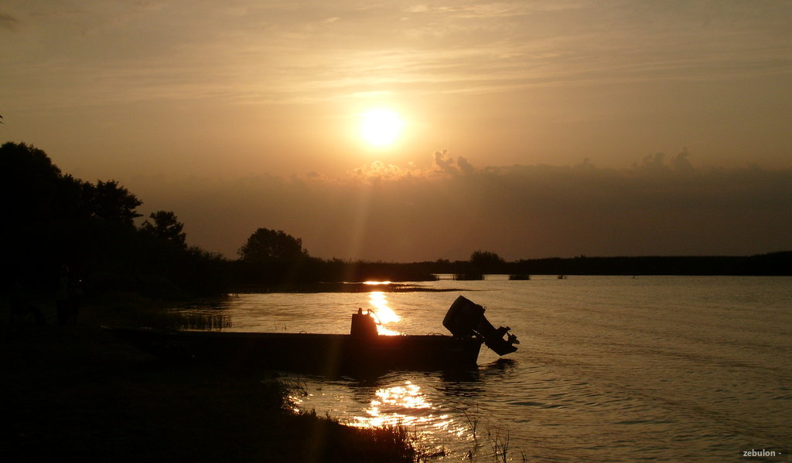
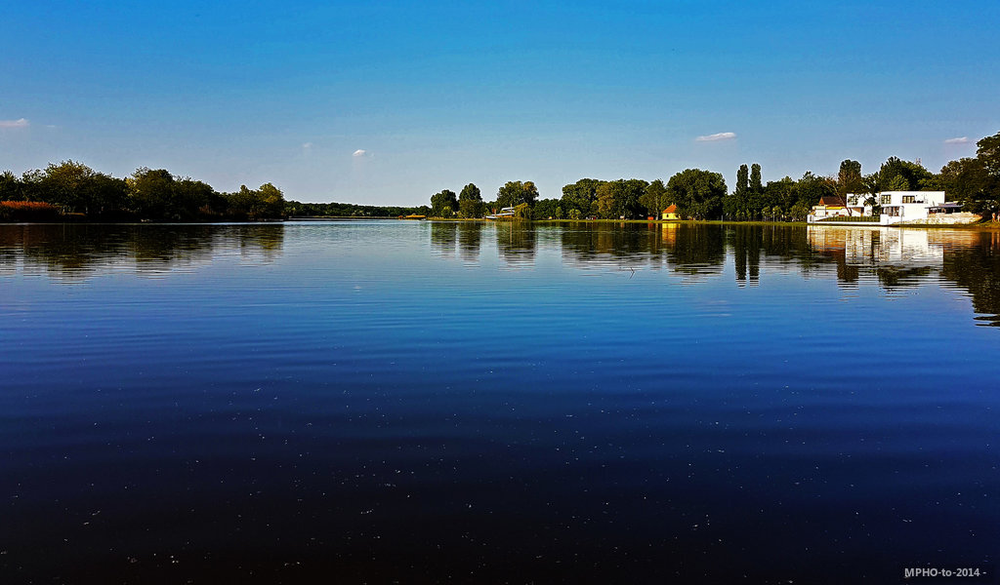

Balaton
A Balaton, Magyarország legnagyobb tava, Közép-Európa egyik
legkedveltebb üdülőhelye. A "magyar tenger" néven is ismert
tó körülbelül 77 kilométer hosszú, és szélessége változó, de
átlagosan 7-8 kilométer. A tó vize általában sekély, nyáron
kellemesen meleg, ami ideális fürdőzési lehetőséget nyújt a
látogatóknak. A Balaton déli partja sekélyebb, homokos
strandokkal, míg az északi partja meredekebb, ahol a festői
Balaton-felvidék található. 
A Balaton nem csak nyáron vonzó, hanem az év minden
szakaszában különleges hangulattal bír. Télen, amikor a tó
befagy, korcsolyázási lehetőségekkel csábítja a látogatókat.
A Balaton régiója gazdag történelmi és kulturális örökséggel
is büszkélkedhet, így minden évszakban érdemes felfedezni.
Tisza-tó
A Tisza-tó, Magyarország második legnagyobb tava, az
Alföldön, a Tisza folyó szabályozása során jött létre. A
tavat mesterségesen alakították ki az 1970-es években a
vízvisszatartás és az árvízvédelem érdekében. Napjainkban a
Tisza-tó nem csak ökológiai szempontból jelentős, hanem
népszerű turisztikai célpont is. A tó számos szigetet,
félszigetet és sekély vízterületet kínál, amelyek gazdag
élővilágnak adnak otthont. 
A tó gazdag madárvilága miatt különösen kedvelt a
madármegfigyelők körében is. Tavasszal és ősszel
vándormadarak sokasága pihen meg itt. A Tisza-tó és környéke
változatos programokat kínál az év minden szakaszában,
legyen szó nyári strandolásról, őszi túrákról vagy téli
jégkorcsolyázásról. Egy látogatás a Tisza-tónál garantáltan
felejthetetlen élményeket nyújt mindenkinek.
Szelidi-tó
A Szelidi-tó Magyarország egyik rejtett gyöngyszeme, amely a
Duna közelében, Bács-Kiskun megyében található. Ez a tó a
természet szerelmeseinek igazi paradicsoma, ahol a csend és
a nyugalom uralkodik. A tó kiváló lehetőséget nyújt a
fürdőzésre, horgászatra és vízi sportokra, így minden
korosztály számára ideális pihenőhely. A Szelidi-tó
környékén több kemping, panzió és étterem található, ahol a
látogatók kényelmesen eltölthetik az idejüket. 
A tó partján sétálva gyönyörködhetünk a nádassal borított
területekben és a változatos madárvilágban. A Szelidi-tó és
környéke kiváló helyszín a kirándulásokhoz és a
természetjáráshoz, ahol a látogatók felfedezhetik a környék
természeti szépségeit. A tavat körülölelő erdők és rétek
számos túraútvonallal várják a kalandvágyókat.
A helyi rendezvények, mint például a nyári fesztiválok és
sportesemények, további szórakozási lehetőségeket kínálnak a
látogatóknak. Egy látogatás a Szelidi-tónál garantáltan
feltölti az embert friss energiával és kellemes élményekkel.
Szelidi-tó vize nyáron kellemesen meleg, ezért a fürdőzők
körében is igen népszerű.